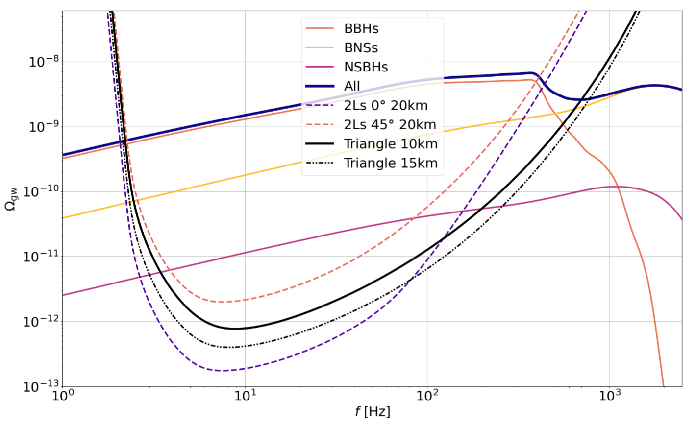
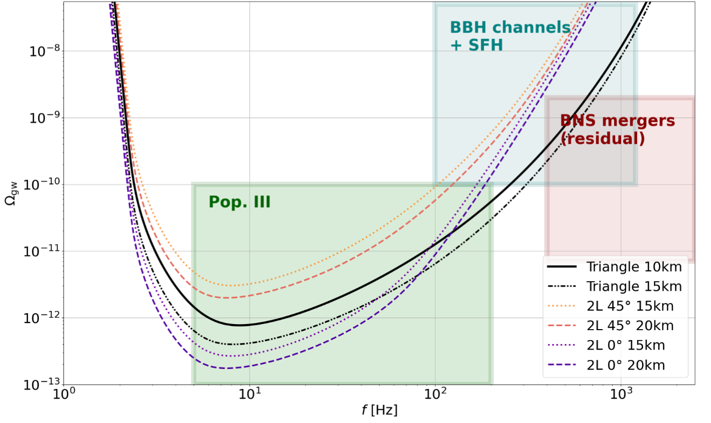
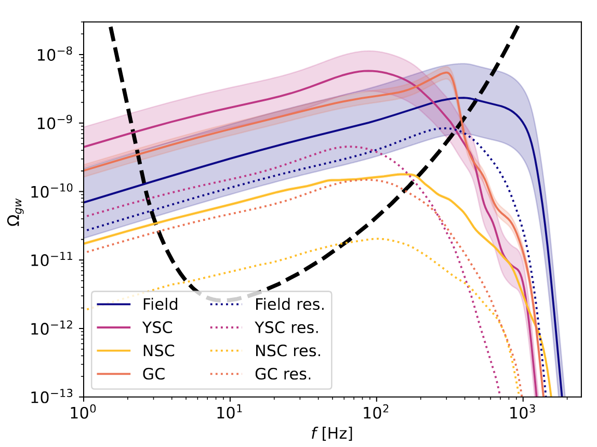
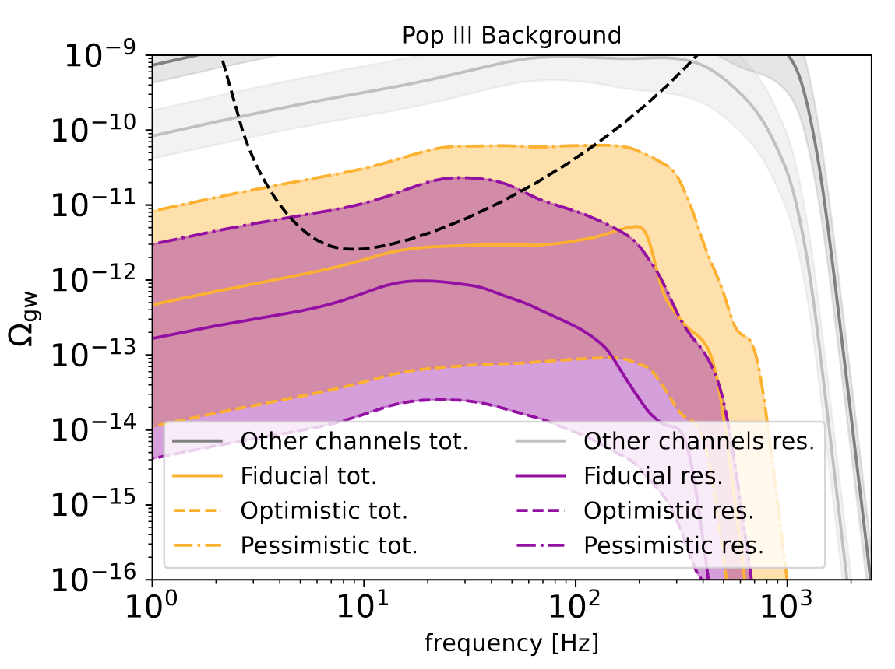

Science with Einstein Telescope, on the behalf of the Einstein Telescope collaboration
On this page, I present my contributions to the Einstein Telescope collaboration.
The content is structured around two main research efforts, each corresponding to a peer-reviewed publication:
-
Science with the Einstein Telescope: a comparison of different designs
https://ui.adsabs.harvard.edu/abs/2023JCAP…07..068B/abstract -
The Science of the Einstein Telescope
https://ui.adsabs.harvard.edu/abs/2025arXiv250312263A/abstract
These studies explore how different detector configurations impact the scientific potential of the Einstein Telescope, particularly in relation to gravitational-wave backgrounds and astrophysical source populations.
Einstein Telescope – Design Impact on astrophysical background detection
On this section, I present my contributions to the design impact study of the Einstein Telescope and the resulting predictions for future scientific observations.
What is the Einstein Telescope?
The Einstein Telescope (ET) is a European initiative to build a third-generation gravitational wave detector in Europe. As of the time this work was written, three sites are under consideration to host the observatory: Sardinia in Italy, Limburg in the Netherlands, and Saxony in Germany.
Multiple designs are currently under study. Here, I focus on the most realistic and widely discussed options, from both technological and financial perspectives.
Detector Designs
The baseline design currently favored by the scientific community features a triangular configuration: three underground arms forming an equilateral triangle, each arm being 10 or 15 km long. At each corner lies the intersection of two interferometers: one optimized for high frequencies, the other for low frequencies. The entire structure would be located 250–300 meters underground.
An alternative design proposes two underground L-shaped interferometers (similar to LIGO), each with 15 or 20 km arms. These would be oriented either parallel (0°) or at an angle (45°) to each other.
Each configuration brings its own scientific advantages and technological challenges.
The simulations and predictions presented below were produced using my custom analysis tool, Princess.
Cost-Benefit Analysis (CoBA)
Since 2021, I have been involved in the ET design community, contributing to the evaluation of how different configurations and arm lengths affect the detection of the astrophysical gravitational-wave background.
These results were published in a collaborative article with a large author list:
https://ui.adsabs.harvard.edu/abs/2023JCAP…07..068B/abstract
Using state-of-the-art models, I predicted the astrophysical gravitational-wave background from three types of compact binary systems:
- Binary black holes (BBH)
- Binary neutron stars (BNS)
- Mixed systems of black hole and neutron star (BHNS)
The contributions of these three populations to the gravitational-wave background are shown in the figure below. The parabolic curves represent the sensitivities of various detector configurations — specifically, the triangle configuration with 10 or 15 km arms, and the double-L configuration with 20 km arms (either aligned or misaligned).

Gravitational-wave background predictions for BBH, BNS, and BHNS systems. The parabolic curves represent the sensitivities of different Einstein Telescope configurations: the triangular design (10 km and 15 km arms), and two 20 km L-shaped interferometers, aligned (0°) or misaligned (45°).
Scientific Challenges and Goals
This study highlights three major scientific challenges for Einstein Telescope in the context of the astrophysical gravitational-wave background:
- Detecting the first generation of black holes (Population III)
- Disentangling black hole formation channels, using binary black hole observations in connection with the star formation history
- Observing the residual gravitational-wave background from binary neutron star mergers
The figure below summarizes these three challenges in the frequency–amplitude parameter space, illustrating which detector designs are best suited to address them.

Design-dependent sensitivity curves and parameter-space locations of key scientific targets.
From this analysis, we can draw several conclusions:
- For detecting Population III black holes, the double-L configuration with aligned arms (0°) is preferred. This configuration provides the best sensitivity in the frequency band where the Population III signal is expected to peak.
- In contrast, for higher-frequency challenges — such as discriminating between formation channels and observing binary neutron star mergers — the triangular configuration offers better sensitivity beyond 120 Hz.
This comparative study helps inform the design decisions for the Einstein Telescope by linking technical choices to their scientific impact.
Beyond Design: What the Einstein Telescope Can Tell Us About the Universe
In addition to evaluating detector design, I also contributed to a broader collaborative study exploring the full scientific potential of the Einstein Telescope. My work focused on two key questions related to the astrophysical gravitational-wave background (SGWB):
- What can we learn about the formation channels of binary black holes (BBH)?
- How can we identify gravitational waves from the first stars — the so-called Population III?
These studies are essential for interpreting the SGWB, which is expected to carry rich information about compact object populations that are too distant or too faint to resolve individually.
Understanding BBH Formation Channels

A major component of the SGWB in the Einstein Telescope will come from binary black hole mergers with masses between ~10 and 1,000 solar masses, and redshifts below 5. These black holes can form through several channels, grouped into two main families:
- Isolated channel: binaries evolve from massive stellar pairs in isolation, often in the field (Field channel).
- Dynamical channel: binaries form through interactions in dense stellar environments, such as globular clusters (GC), young star clusters (YSC), or nuclear star clusters (NSC). Other scenarios include gas-rich environments like active galactic nuclei (AGN).
Each channel leaves a distinct imprint on the black holes’ masses, spins, and orbital properties. These differences affect both the rate of mergers and the spectral shape of the SGWB.
In the study, we modeled the SGWB contributions from the Field, YSC, NSC, and GC channels using the PRINCESS code and population models from the literature. The analysis included both the total background and the residual background — the latter obtained by subtracting individually detectable sources (with SNR > 20), simulating realistic data processing by the ET.
The figure below (from the original publication) shows how each formation channel contributes to the SGWB, including uncertainties in merger rates. Notably, the frequency where the SGWB deviates from a simple power-law carries information about the minimal black hole mass and redshift distribution for each formation channel.
Probing the First Stars: Population III Remnants

Population III stars — the first generation of stars formed in the early universe — are also expected to contribute to the SGWB. Their black hole remnants are believed to be more massive and to merge at higher redshifts compared to later stellar populations (Pop I/II). This results in a gravitational-wave background that deviates from the typical power-law at lower frequencies.
Our study used population models from the literature to estimate both the total and residual SGWB from Pop III black holes. Even though their overall contribution is predicted to be weaker (due to low merger rates), detecting this background would provide unique constraints on the early universe.
However, identifying a residual Pop III signal is extremely challenging. Its detection relies on:
- Accurate subtraction of individually detectable Pop I/II signals.
- Excellent low-frequency sensitivity of the Einstein Telescope.
- Improved modeling of merger rates and mass distributions for Pop III stars.
Even if a clear detection remains out of reach, the SGWB observed by ET can place upper limits on high-redshift black hole mergers, offering indirect evidence for early star formation scenarios.